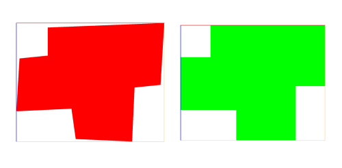

rectify operation
angle float Maximum deviation in degrees from the right angle in range [0, 45].
Aligns edges to the scope such that they are parallel or perpendicular to each other if they initially deviate less than angle from that condition.
The algorithm aligns all edges such that their projection onto either the xy, yz or zx plane of the scope becomes parallel to the axes spanning that plane if the angle between the edge and the respective axis is less than angle. From the planes xy, yz, zx the one that is most parallel to the shape is chosen as the projection plane.
Example: For a shape that is parallel to the xy plane of the scope, all edges with an angle less than angle to the x or y axis are aligned parallel to the x or y axis, respectively.
Related
Examples
Rectifying an angled footprint

@Range(min=0,max=45)
attr angle = 15
@StartRule
Lot -->
ShowOrig
ShowRect
ShowOrig -->
color(1, 0, 0)
ShowRect -->
t(0, 0, '-1.1)
rectify(angle)
color(0, 1, 0)
The image compares the initial shape with the rectified shape.